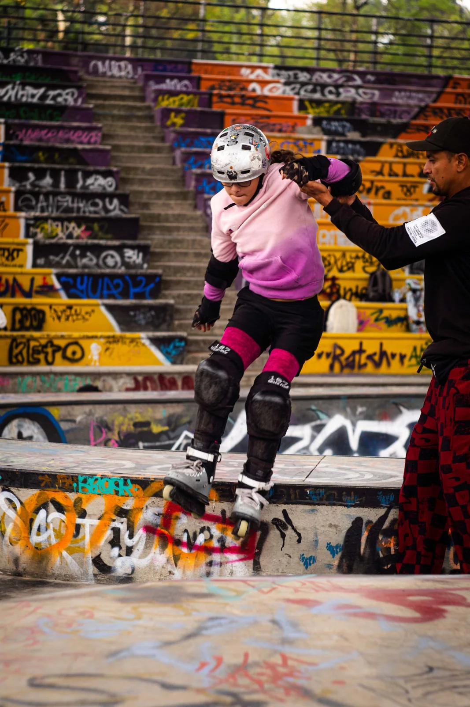

Прокат
Для першого заняття, пробного катання або тимчасового комплекту.
Умови прокату
Прокат · підбір · магазин
Ролики, шоломи та захист для тренувань і вільного катання. Допоможемо підібрати розмір, перевірити комплект і зрозуміти, коли вже варто купувати власне спорядження.
Швидкий вибір
Оберіть рішення відповідно до досвіду, регулярності катання та спортивної мети.
Для першого заняття, пробного катання або тимчасового комплекту.
Умови прокатуДля регулярних тренувань, стабільної посадки та розвитку техніки.
Відкрити магазинПрокат видається на місці для тренувань Roller Friends та вільного катання на нашому майданчику.
Для занять у залі окремо бронювати прокат не потрібно — адміністратор видає його перед тренуванням.
Будьте на майданчику за 10–15 хвилин до початку, щоб спокійно підібрати й одягнути спорядження.
Повідомте вік і розмір ноги. Адміністратор допоможе підібрати ролики, шолом і захист.
До виходу на майданчик перевіряються баклі, шнурівка, колеса, фіксація шолома та захисту.
Після завершення послуги передайте весь комплект особисто працівнику Roller Friends.
Винести прокат за межі майданчика можна лише в межах погодженого тренування Roller Friends.

Попередьте заздалегідь
Спорядження може бути надане для індивідуального тренування, мінігрупи або групового заняття надворі.
Під час запису напишіть адміністратору або зателефонуйте й повідомте, кому саме потрібні ролики, шолом чи захист. Це дає змогу перевірити потрібні розміри та підготувати комплект.
Правильна посадка допомагає краще контролювати рухи та зменшує ризик травмування.
Коротко про відповідальне користування. Повні правила школи доступні окремо.
Кожна ситуація розглядається індивідуально з урахуванням обставин, характеру пошкодження та попередніх домовленостей. Roller Friends і відвідувач обговорюють найбільш комфортне відшкодування або компромісне рішення відповідно до правил школи.
За комплект, виданий дитині, відповідають її батьки або законні представники.
Для регулярних занять власне спорядження забезпечує стабільну посадку та звичне відчуття під час кожного тренування.

rollerfriends.com
У магазині представлені дитячі та дорослі ролики, шоломи, захист, колеса, підшипники, рами, сумки, спортивний одяг та аксесуари.
Допоможемо підібрати модель відповідно до віку, розміру, рівня катання й спортивної мети. Актуальні ціни, наявність, оплата, доставка та повернення — безпосередньо на сайті магазину.
Перейти до rollerfriends.comВідповіді на найважливіше перед тренуванням.
Для індивідуального або групового тренування у залі — ні. Адміністратор видає прокат на місці. Для тренування надворі обов’язково повідомте про потребу під час запису.
Ні. Ролики, шолом і захист оплачуються окремо відповідно до прайсу прокату.
Так, кожну позицію можна взяти окремо за умови наявності потрібного розміру.
Лише разом із погодженим тренуванням Roller Friends надворі — індивідуальним, у мінігрупі або груповим.
Послуга має фіксовану тривалість — 30 або 60 хвилин відповідно до обраного формату тренування.
Одразу припиніть катання та повідомте інструктора або адміністратора. Не намагайтеся ремонтувати спорядження самостійно.
Потрібна консультація?
Повідомте вік, розмір ноги, формат і місце тренування — адміністратор підкаже, яке спорядження підготувати.